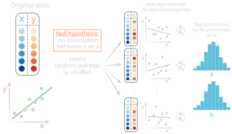

Last time
Today
We will apply regression analysis to different situations to see what we can do with it.
We will try to understand how to do estimation and testing and how they "fit" together (see the pun here)
Inference
we only used regression methods to describe a sample and did not make statistical inferences about the larger population. Now, we consider how to make inferences about a relationship in the population represented by the sample. Some questions involving the population that we might ask when analyzing a relationship are: 1. Does the observed relationship also occur in the population? For example, is the observed relationship between hand-span and height strong enough to conclude that the relationship also holds in the population? 2. For a linear relationship, what is the slope of the regression line in the population? For example, in the larger population, what is the slope of the regression line that connects hand-spans to heights? 3. What is the mean value of the response variable (y) for individuals with a specific value of the explanatory variable (x)? For example, what is the mean hand-span in a population of people 65 inches tall? 4. What interval of values predicts the value of the response variable (y) for an individual with a specific value of the explanatory variable (x)? For example, what interval predicts the hand-span of an individual 65 inches tall?
Slope
As we have seen with other quantities, the notation we use for the slope of the regression line of a population is different than the notation we use for the slope of the regression line of a sample. For the slope of a regression line for a population, we use the Greek letter $\beta$ (beta).
The regression equation for a simple linear relationship in a population can be written as:
$E(Y) = \beta_0 + \beta_1X + \epsilon$
- $E(Y)$represents the mean or expected value of y for individuals in the population who all have the same particular value of x. Note that $\overset{\hat{}}{y}$ is an estimate of $E(Y)$
- $\beta_0$ is the intercept of the straight line in the population
- $\beta_1$ is the slope of the regression line in the population. Note that if the slope $\beta_1 = 0$, there is no linear relationship in the population
Unless we measure the entire population, we cannot know the numerical values of $\beta_0$ and $\beta_1$. These are population parameters that we estimate using the corresponding sample statistics.
Linear regression for prediction
Let's build a linear model!
Go to:
https://goo.gl/kjvEqE
Enter your:
- Height (inches)
- Shoe Size
Predicted height:
Uncertainty of the parameters
Tipping pattern
presentation of the problem + the data
The owner of a bistro called First Crush in Potsdam, New York, was interested in studying the tipping patterns of its patrons. He collected restaurant bills over a two-week period that he believes provide a good sample of his customers. He recorded the data from 157 bills including the amount of the bill, size of the tip, percentage tip, number of customers in the group, whether or not a credit card was used, day of the week, and a coded identity of the server.
Tipping pattern
We want to predict the tip amount based on the bill amount.
The scatterplot of the data show
- strong positive relationship in the data
- few outliers (big tippers) above the main pattern
If we calculate correlation, we obtain $r=0915$, reinforcing the fact that the data have a strong positive linear relationship.
Data
Data Collection: What population can we draw inferences about from the data in RestaurantTips? The sample was generated by collecting all bills over several nights at the restaurant. Is this a problem for making inferences?
Because the data are all from one restaurant, the population of interest is all bills and tips at this restaurant. The original sample was not a random sample of all bills, but rather the data were collected from all bills in a certain time frame. That might introduce bias if the days for the bills in the sample are different in some substantial way (for example, over a holiday season or only weekends). However, the owner indicates that the days for which bills were sampled are representative of the business at his restaurant. As data analysts we might alert the owner to the possibility of bias when reporting our ndings, but we proceed for now with the assumption that the sample is representative of all bills at this restaurant.
Tipping pattern
Average percentage from sample
We could make a prediction using this percentage, but that wouldn't be really correct because it is just value from this sample, not the true percentage.
We could make inference from this sample (paired analysis) to know the true mean
Tipping pattern
The slope of 0.182 indicates that for every extra dollar in the restaurant bill the tip will increase, on average, by about $0.18. This means the typical tip rate at this restaurant is roughly 18% of the total bill.
Inference to the population
We only used the sample so far. We can also make inference about the population
Bootstrapping the slope
To construct a bootstrap distribution for the sample slope, we select samples of size n = 157, with replacement, from the cases in the RestaurantTips dataset. For each sample, we run the regression model, compute the sample slope, and save it to form the bootstrap distribution.
It does not include the null value of zero, so we reject H0 in favor of a two-tailed alternative at a 5% level. In fact, since the confidence interval includes only positive values, we can be fairly sure that the true slope is above zero. Thus we have evidence that there is some positive slope for the relationship between the amount of a tip and the size of a bill at this restaurant.
What about tip percentage?
From the dataset, we can calculate a variable showing the tip amount expressed as a percentage of the bill.
Most people use a fairly regular percentage (which may vary from person to person) of the total bill when deciding how big a tip to leave. Some economists (Loewenstein, G. and Prelec, D. (1992). Anomalies in Intertemporal Choice: Evidence and an Interpretation, Quarterly Journal of Economics, 1992;107:573–97.) have theorized that people tend to reduce that percentage when the bill gets large, but larger groups of customers might be more generous as a group due to peer pressure.
Tip percentage NHST
If we now let 𝛽 denote the slope for predicting tip percentage based on bills at this restaurant, the relevant hypotheses are H∶𝛽=0 H0∶ 𝛽≠0
we can simulate data under the null hypothesis of no relationship (𝛽 = 0) by randomly assigning the tip percentages in the dataset to the bill amounts. For each rearrangement, we compute the new regression line and save the sample slope to create a randomization distribution.
The sample does not have enough evidence to conclude that the slope between PctTip and Bill is different from zero. Since the slope in our sample is positive, there is certainly no evidence to support the economists’ claim of a negative relationship.
Linear regression NHST
What about the outliers?
Figures B.1 and B.3 both show a few possible outliers from the pattern of the rest of the data. Three very generous customers left tips that were more than 30% of the bill. Do those points have a large effect on the conclusions of the slopes for either of these relationships (Tip vs Bill or PctTip vs Bill)? One way to investigate this question is to omit those cases from the data and re-run the analysis without them.
After dropping the three generous data points, the new least squares lines with the remaining 154 cases for both relationships are shown in Figure B.5. The outliers have a negligible effect on the slope of the relationship between Tip and Bill. It barely changes from 0.182 with the outliers to 0.183 without them. A 90% con dence inter- val for this slope, based on the data without outliers, goes from 0.173 to 0.193, which is a bit narrower, but otherwise similar to the 90% interval, (0.168, 0.197), from the full data.
The regression equation for predicting percentage tip, PctTip = 14.9 + 0.056Bill, is a bit steeper when the outliers are removed. When testing H ∶ 𝛽 = 0 vs 0 H ∶𝛽≠0 for this new slope, the p-value for one set of 10,000 randomizations turns a out to be 0.006. This p-value is quite small, showing that, when we remove the outlier big tippers, there is a signi cant positive association with the percentage of the tip tending to increase with larger bills.
The 1970 military draft lottery
In November of 1969, with the Vietnam War raging, President Nixon signed an executive order to reinstitute the draft. Men were drafted to fill vacancies in the United States Armed Forces that could not be filled through voluntary means.
In an attempt to expose male youth "fairly" to the risk of being drafted, the Selective Service held a lottery on December 1, 1969 to allocate birthdates at random. Men were then drafted in the order that their birth days were drawn.
The selection process
The order stipulated that the selection be a random process based on the birthdays of men born between January 1, 1944 and December 31, 1950.
The Selective Service placed the days of the year, including February 29, into 366 plastic capsules. These capsules were placed in a glass container, mixed, then drawn one at a time.
The selectoin process
The first capsule drawn contained the date September 14. This date was assigned the rank 1.
The second date drawn, April 24, was assigned rank 2, and so on ...
The selectoin process
Those eligible for the draft who were born on September 14 (rank 1) would be the first selected to serve in Vietnam.
Once all eligible men born on this date were inducted into the service, then the Selective Service would begin to induct men born on April 24 (rank 2), etc ...
The 1970 military draft lottery
Note about the draft numbers
It was estimated by the Pentagon that men with draft numbers 200 to 366, would escape the draft entirely. In fact, no man with a draft number higher than 195 was called to duty.
Was the lottery really random?
Was the lottery really random?
NY Times article - January 4, 1970